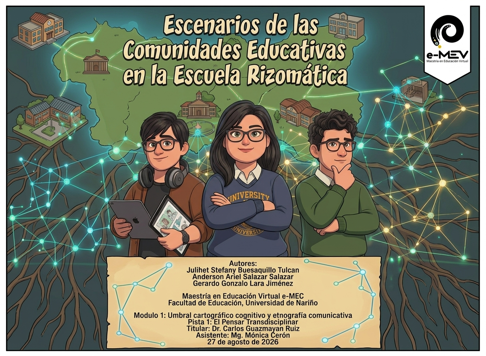
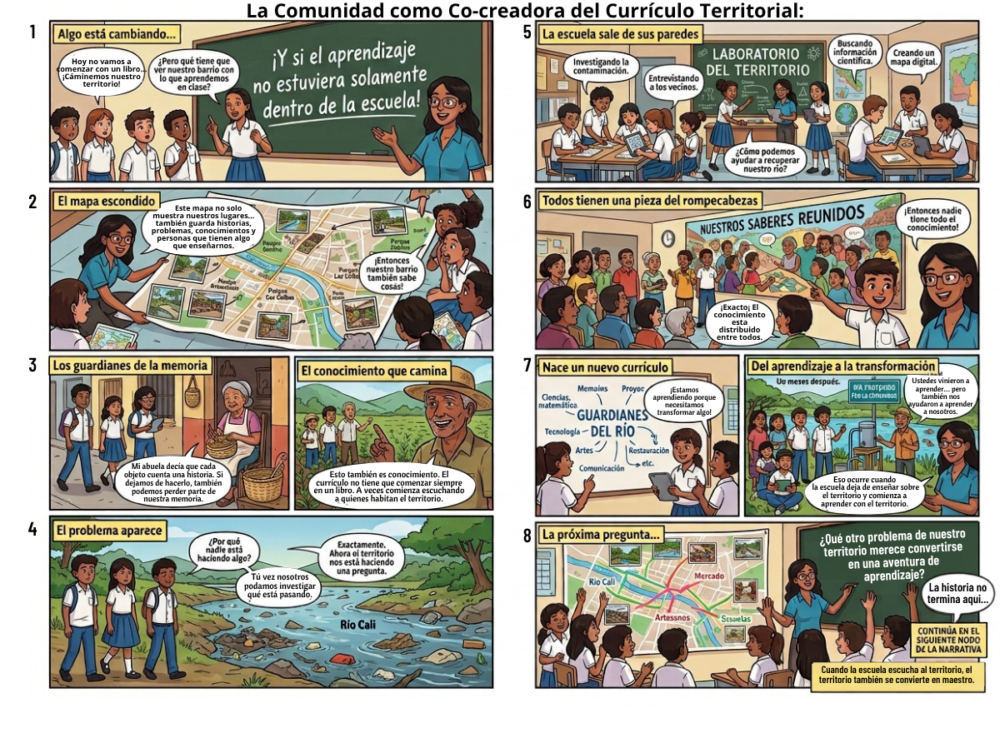
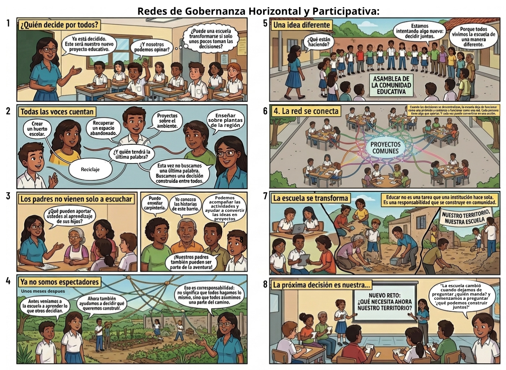
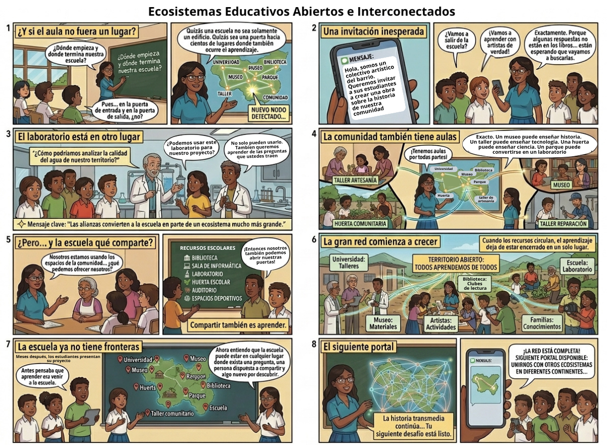
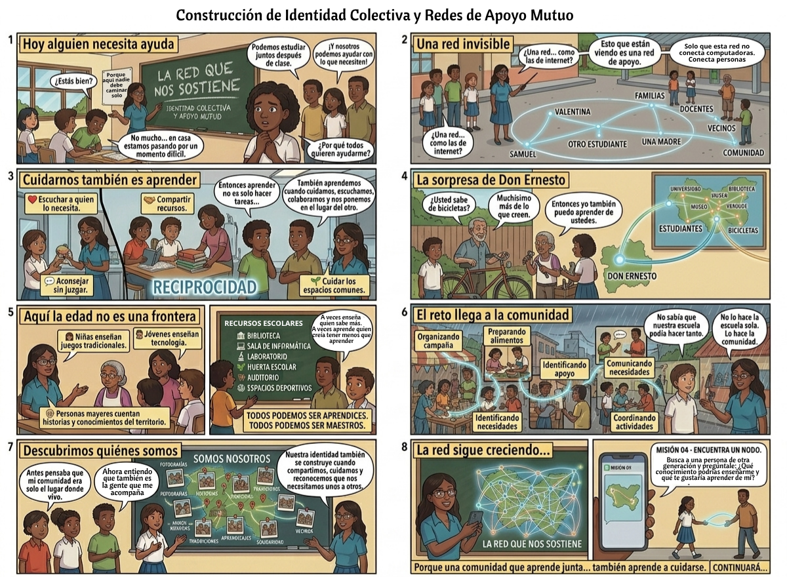
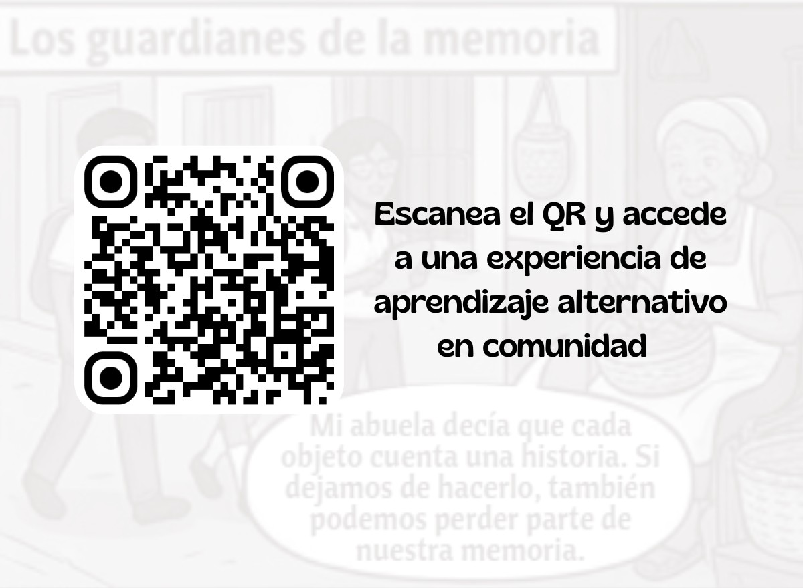

Un recorrido por los territorios compartidos donde el aprendizaje se multiplica en todas direcciones: siete escenarios para pasar, detenerse y acercar.
Hoja 1 de 7






Clic en una página para acercar · doble clic o ✕ para volver · Esc sale del zoom